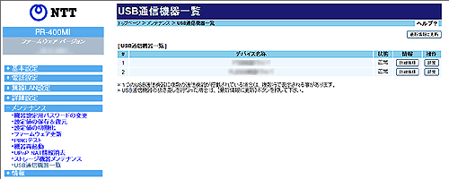
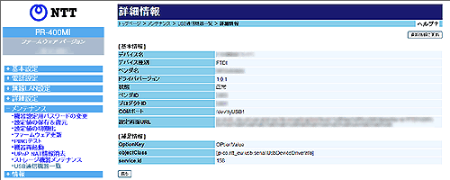

| 現在接続されているUSB通信機器の一覧を表示します。 ※NTT東日本のみの提供となります。 ※ご利用状況によりデバイスが表示されない場合があります。 |
| ※「Web設定」画面に表示されているボタンについての説明は こちら  |
| 本商品に接続しているUSB通信機器を表示します。 | |
| USBポートに接続しているUSB通信機器の接続状態を表示します。 | |
| ・正常：正常に接続しています。 ・認識中：USB通信機器を認識中です。 |
|
| ［詳細情報］をクリックすると、詳細情報を表示します。 | |
| ［設定］ | |
| USBポートに接続しているUSB通信機器を設定します。 各USB通信機器の設定画面が表示されます。 ※USB通信機器によって、設定画面が異なります。 |
|
|
|
※ご利用のUSB通信機機器により表示される項目が異なることがあります。
| ※「Web設定」画面に表示されているボタンについての説明は こちら  |
| USB通信機器の名称を表示します。 | |
| USB通信機器の種別を表示します。 | |
| USB通信機器のベンダ名を表示します。 | |
| USB通信機器に対応するドライバのバージョンを表示します。 | |
| USB通信機器の現在の状態を表示します。 USB通信機器の認識状態により、「正常」、「認識中」、「異常」が表示されます。 「正常」と表示されている場合のみ通信が可能です。 |
|
| USB通信機器のベンダIDを表示します。 | |
| USB通信機器のプロダクトIDを表示します。 | |
| USB通信機器が使用するCOMポート番号を表示します。 | |
| 設定画面のURLを表示します。 | |
※ご利用のUSB通信機器により表示されない場合があります。